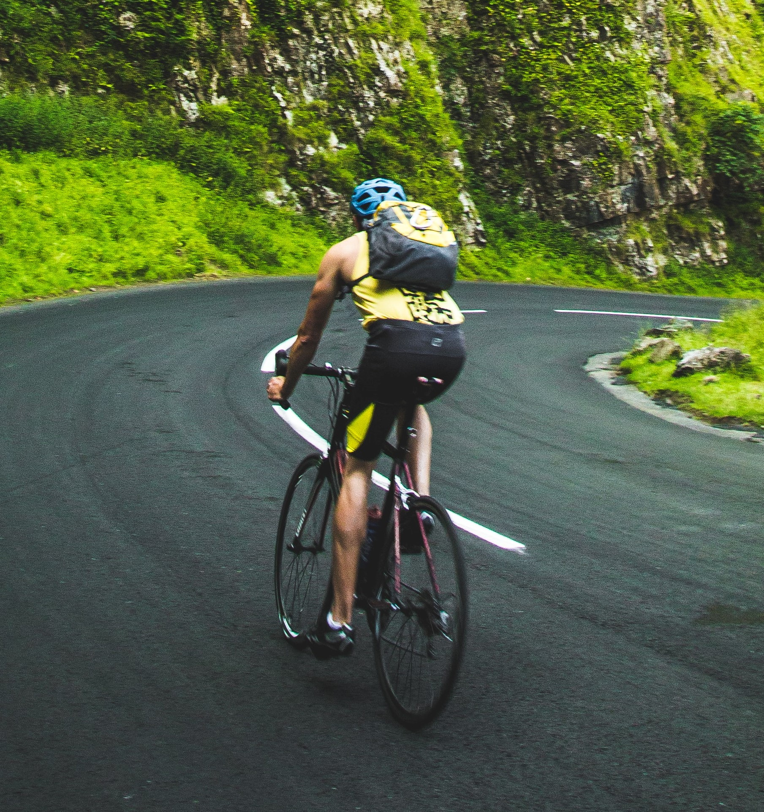

¡Bienvenid@ a mi perfil!
Sobre mi
Hola! Mi nombre es Andrés Muñoz y estoy aprendiendo desarrollo web. Este es mi perfil y aquí te cuento sobre las actividades que me apasionan. Pronto podrás encontrar aquí mis proyectos de desarrollo web.
Leer más...
Desarrollo Web
Me apasiona aprender desarrollo web. Actualmente estoy siguiendo el bootcamp de Le Wagon para convertirme en un desarrollador full-stack. Los lenguajes de programación con los que estoy familiarizado son Ruby y JavaScript.
Leer más...

Ciclismo
Es fácil encontrar la felicidad sobre dos ruedas, por ello, agarro la bicicleta cada vez que puedo y doy una vuelta por la ciudad.
Leer más...
Trekking
No hay nada como explorar los miles de paisajes que tiene el Perú y recorrer sus montañas. Siempre es bueno reconectarse con la naturaleza e ir por aventuras.
Leer más...